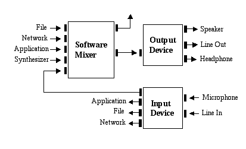
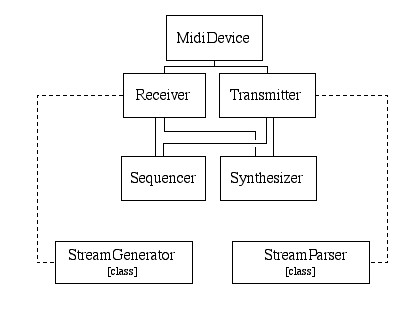

Sound Architecture Overview
Design Goals
The Java Sound API is a low-level API for effecting and controlling input
and output of audio media. It provides explicit control over the capabilities
commonly required for audio input and output in a framework that promotes
extensibility and flexibility.
Because sound is so fundamental, Java Sound fulfills the needs of a wide
range of customers. Potential application areas include:
- Communication frameworks, such as conferencing and telephony
- End-user content delivery systems, such as media players and music using
streamed content
- Interactive applications, such as games and Web sites that use dynamic
content
- Content creation and editing
- Tools, toolkits, and utilities
Java Sound enables applications to extend audio support with specialized
capabilities, and integrates well with architectures that provide higher-level
interfaces and integration with other media types.
Java Sound provides the lowest level of audio support on the Java platform.
It provides a high degree of control over audio-specific functionality. For
example, it provides mechanisms for installing, accessing, and manipulating
system resources such as digital audio and MIDI (Musical Instrument Digital
Interface) devices. It does not include sophisticated sound editors and GUI
tools; rather, it provides a set of capabilities upon which such applications
can be built. It emphasizes low-level control beyond that commonly expected
by the end user, who benefits from higher-level interfaces built on top of
Java Sound.
Note: Throughout this document, the word "application"
refers generically to Java applets as well as Java applications.
Packages
The Java Sound API includes support for both digital audio and MIDI data.
These two major modules of functionality are provided in separate packages:
javax.sound.sampled
This package specifies interfaces for capture, mixing, and playback of digital
(sampled) audio.
javax.sound.midi
This package provides interfaces for MIDI synthesis, sequencing, and event
transport.
Two other packages permit service providers (as opposed to application
developers) to create custom components that can be installed on the system:
javax.sound.sampled.spi
javax.sound.midi.spi
The next section of this document discusses the sampled-audio system,
including an overview of the javax.sound.sampled API.
The final section covers the MIDI system and the
javax.sound.midi API.
Sampled Audio
The javax.sound.sampled package handles digital audio
data, also referred to as sampled audio. ("Samples" refer to
successive snapshots of a signal, which in the case of digital audio is a sound
wave. For example, the audio recorded for storage on compact discs is
sampled 44100 times per second. Typically, sampled audio comes from a sound
recording, but the sound could instead be synthetically generated. The term
"sampled audio" refers to the type of data, not its origin. Sampled
audio can be thought of as the sound itself, whereas MIDI data can be thought
of as a recipe for creating musical sound.)
Java Sound does not assume a specific audio hardware configuration; it is
designed to allow different sorts of audio components to be installed on a system and
accessed by the API. Java Sound
supports common functionality such as input and output from a sound card (for
example, for recording and playback of sound files) as well as mixing of
multiple streams of audio. Here is one example of a typical audio architecture
for which Java Sound might be used:

A Typical Audio Architecture
In this example, a device such as a sound card has various input and output
ports, and mixing is provided in software. The MIDI synthesizer shown as one
of the mixer’s audio inputs might also be a feature of the sound card,
or it might be implemented in software.
(The javax.sound.midi package, discussed later, supplies
a Java interface for synthesizers.)
The major concepts used in the javax.sound.sampled
package are described in the sections below.
Lines
A line is an element of the digital audio "pipeline," such as an audio
input or output port, a mixer, or an audio data path into or out of a mixer.
The audio data flowing through a line can be mono or multichannel (for example,
stereo). Each type of line will be described shortly, but first some of their
functional relationships will be illustrated, showing the flow of audio through
the "pipeline." The following diagram shows different
types of lines in a simple audio-output system:
A Possible Configuration of Lines for Audio Output
In this example, an application has asked a mixer for one or more available
clips and source data lines.
A clip is a mixer input into which you can load audio data prior to playback; a source data line
is a mixer input that accepts a real-time stream of audio data.
The application preloads audio data from a
sound file into the clips, and then pushes other audio data into the source data lines.
The mixer reads data from these lines, each of
which may have its own reverberation, gain, and pan controls, and uses the reverb
settings to mix the "dry" audio signals with the reverberated
("wet") mix. The mixer delivers its final output to one or more output
ports, such as a speaker, a headphone jack, and a line-out jack.
Although the various lines are depicted as separate rectangles in the diagram, they
are all "owned" by the mixer, and can be considered integral parts of the mixer. The
reverb, gain, and pan rectangles represent processing controls (rather than lines)
that can be applied by the mixer to data flowing through the lines.
(Note that this is just one example of a possible audio system that is supported by the API. Not
all audio configurations will have all the features illustrated. An
individual source data line might not support panning, a mixer might not implement
reverb, and so on.)
A simple audio-input system might be similar:
A Possible Configuration of Lines for Audio Input
Here, data flows in to the mixer from one or more input ports, commonly the
microphone or the line-in jack. Gain and pan are applied, and the mixer delivers
the captured data to an application via the mixer's target data line. A target data line
is a mixer output, containing the mixture of the streamed input sounds. The
simplest mixer has just one target data line, but some mixers can
deliver captured data to multiple target data lines simultaneously.
The different types of line will now be examined more closely.
Several types of line are defined by subinterfaces of the basic Line
interface. The interface hierarchy is shown below.
 [D]
The Line Interface Hierarchy
[D]
The Line Interface Hierarchy
The base interface, Line, describes the minimal functionality common to all
lines:
- Routing
A line has an information object (an instance of Line.Info) that indicates what
mixer (if any) sends its mixed audio data as output directly to the line, and
what mixer (if any) gets audio data as input directly from the line.
Subinterfaces of Line may have corresponding subclasses of Line.Info that
provide other kinds of information specific to the particular types of line.
- Controls
A line can have various types of controls, such as gain, pan, and reverb
controls. Usually, a line has no more than one control of a given type, but
this is not a necessary limitation. Controls are discussed in more detail
below.
- Open or closed status
Opening and closing a line affects its resource allocation. Successful opening
of a line guarantees that resources have been allocated to the line. Opening a
mixer that has audio input and/or output ports normally involves acquiring the
native platform hardware resource (sound card) and initializing any required
software components. Opening a line that is a data path in or out of the mixer
might involve device initialization as well as allocation of limited resources
from the mixer. In other words, a mixer has a finite number of lines, so at
some point multiple applications (or the same application) might vie for usage
of the mixer.
Closing a line indicates that any resources used by the line may now be released.
To free up resources, applications should close lines whenever they are not
in use, and must close all opened lines when exiting.
Mixers are assumed to be shared system resources, and can be opened and
closed repeatedly. Other lines may or may not support re-opening once they have
been closed. Mechanisms for opening lines vary with the different sub-types and
are documented where they are defined.
- Events
A line generates events when it
opens or closes. The events are instances of the LineEvent class. Two
types of LineEvent are OPEN and CLOSE, but subinterfaces of
Line can introduce other types of events.
When a line generates an OPEN or CLOSE event, the
event is sent to all objects
that have registered to "listen" for events on that line. Such objects
must implement the LineListener interface.
An application can create these objects, register them to listen for line events, and
react to the events as desired.
Ports are simple lines for input or output of audio to or
from audio devices. The Port interface has an inner class,
Port.Info, that specifies the type of port. Some common types
are the microphone, line input, CD-ROM drive, speaker, headphone, and line output.
The Mixer interface represents a hardware or software device that has
one or more input lines and one or more output lines. This definition means
that a mixer need not actually mix data; it might have only a single input.
The Mixer API is intended to encompass a variety of devices, but the typical
case supports mixing.
The Mixer interface provides methods for obtaining a mixer's lines. These can
include target data lines, from which an application can read captured audio
data, source data lines, to which an application can write audio data for
playback (rendering), and clips, in which an application can preload sound data
for playback. The mixer can lock these resources. For example, if the mixer
has only one target data line and it is already in use, an attempt by an
application to obtain a target data line will cause an exception to be
thrown.
You can query a mixer for lines of different types, by passing the
appropriate type of Line.Info. You can also ask the mixer how many
lines of a particular type it supports.
A mixer maintains textual information about its specific device type
in an inner class called Mixer.Info. This information include
the product's name, version, and vendor, along with a textual description.
Notice that the generic Line interface does not provide a means to start
and stop playback or recording. For that you need a data line. The
DataLine interface supplies the following additional media-related
features beyond those of a Line:
- Audio format
Each data line has an audio format associated with its data stream.
The format (an instance of AudioFormat) specifies
the arrangement of the bytes in the audio stream. Some of the format's
properties are the number of channels, the sample rate, the sample size, and
the encoding technique. Common encoding techniques include linear pulse-code
modulation (PCM), mu-law encoding, and a-law encoding.
- Media position
A data line can report its current position in the media, expressed in sample
frames. This represents the number of sample frames captured by or rendered
from the data line since it was opened.
- Buffer size
This is the size of the data line’s internal buffer in sample frames. For
a source data line, the internal buffer is one to which data can be written,
and for a target data line it’s one from which data can be read.
- Level
The data line's level represents the current linear amplitude of the audio signal, from 0 to 1.
- Start and stop playback or capture
- Pause and resume
Pausing a data line causes it to
cease data I/O activity (capture or playback) without discarding data or
releasing resources.
Resuming the line enables it to continue data I/O activity.
Pausing a data line can result in an audible discontinuity (such as a click)
in playback or recording. To avoid overfilling the capture
buffer, an application that is recording
audio should pause the target data line from which it reads audio whenever
it is not prepared to read captured data continuously. Resuming a paused
source data line will play back the next samples from
its queue, unless the data line has been flushed.
- Flush
Flushing a data line discards unprocessed data from the queue and returns.
In some cases, not all queued data can be discarded. For example,
a mixer can flush data from
the buffers in its source data lines, but any unplayed data already in its internal
buffer (which contains the mixed output data) will still be played.
- Drain
Draining a data line blocks until all unprocessed data has been drained
from the queue, and the data line's buffer has become empty. If you attempt
to drain a data line whose buffer is still being filled (either by the
application or by a mixer), the draining might not complete.
- Active status
A data line is considered active if it is engaged in active presentation or
capture of audio data to or from a mixer.
- Events
START and STOP events are produced when active
presentation or capture of
data from or to the data line starts or stops.
An application can obtain a data line from a mixer. If the
data line cannot be allocated because of
resource constraints (for example, if the mixer supports only one
target data line and it is already in use), an exception is thrown.
A TargetDataLine receives audio data from a mixer.
Commonly, the mixer has captured audio data from
a port such as a microphone; it might process or mix this captured audio before
placing the data in the target data line's buffer. The TargetDataLine interface provides methods
for reading the data from the target data line's buffer and for
determining how much data is currently available for reading. If an
application attempts to read more data than is available, the read method
blocks until the requested amount of data is available. This applies even if
the amount of data requested is greater than the
line's buffer size. The read method returns if the line is
closed, paused, or flushed.
Applications recording audio should read data from the target data line fast
enough to avoid overflow of the buffer, which results in discontinuities in
the captured data. If the buffer does overflow, the oldest queued data is
discarded and replaced by new data.
A SourceDataLine receives audio data for playback. It provides
methods for writing data to the source data line's buffer for playback, and for
determining how much data the line is prepared to receive without blocking.
If an application attempts to write more data than is available, the read
method blocks until the requested amount of data can be written. This applies
even if the amount of data requested is greater than the line's buffer size.
The write method also returns if the line is closed, paused, or flushed.
Applications playing audio should write data to the source data line fast
enough to avoid underflow (emptying) of the buffer, which may result in
discontinuities in audio playback. If audio playback stops due to underflow, a
STOP event is generated. A START event is generated
when presentation resumes.
A Clip is a data line into which audio data can be loaded prior
to playback. Because the data is pre-loaded rather than streamed, the
clip’s duration is known before playback, and you can choose any starting
position in the media. Clips can be looped, meaning that upon playback, all
the data between two specified loop points will repeat a specified number of
times, or indefinitely.
A GroupLine is a synchronized group of data lines. If a
mixer supports group lines, you can specify which data lines should be
treated as a group. Then you can start, stop, or close all those
data lines by sending a single message to the group, instead of
having to control each line individually.
Controls
Data lines and ports often
have a set of controls that affect the audio signal passing through the line.
The way in which the signal is affected depends on the type of control.
The Java Sound API defines the following subclasses of Control:
GainControl
This control allows the signal's volume to be boosted or cut a specified number
of decibels. A fade can be applied so that the volume increases
or decreases gradually instead of instantly. The gain control includes a mute
function to temporarily silence the line without altering its gain setting.
A GainControl object can be queried for its resolution and for
the minimum and maximum gain values it permits.
The resolution is expressed as the number of increments over which the range of possible
values is distributed.
The types of gain control defined by the API include an overall gain control
as well as gain controls for auxiliary send and return. The send and return
typically control a line's contribution to a mixed and reverberated signal.
PanControl
A pan control affects the sound's right-left positioning.
For a stereo audio signal, the pan control affects the balance between
the volumes of the left and right channels. An application can set
the pan position and can query the control for its resolution. The resolution
is expressed as the number of incremental values from "hard left" to "hard right."
ReverbControl
This control gives access to any number of reverberation settings. Each setting
might emulate a different time of room (small club, concert hall, cavern, etc.).
The parameters used in constructing each setting consist of the delay time and
intensity of early reflections, the delay time and intensity of late
reflections, and an overall decay time.
SampleRateControl
This control affects the rate of playback. Altering the audio sample rate changes
the sound's pitch. As with GainControl, the change can be made
gradually instead of immediately,
and the control can be queried for its resolution and its minimum and maximum
possible values.
Programmatically, you obtain a particular control object
from a line through a reference to the control’s class. You can also
obtain an array of all the controls for that line.
AudioSystem
The AudioSystem class serves as an application's entry point for
accessing the installed sampled-audio resources.
You can query the AudioSystem to learn what sorts of audio components
have been installed, and then you can obtain access to them.
For example, an application
might start out by asking the AudioSystem class whether there is
a mixer that has a certain configuration, such as one of the input or output
configurations illustrated earlier in the discussion of lines. From the mixer,
the application would then obtain data lines, and so on.
Here are some of the resources an application can obtain from the
AudioSystem:
- Mixers
A mixer can be obtained by passing a specific Mixer.Info object. You can
learn what mixers are available by invoking the getMixerInfo method,
which returns an array of Mixer.Info objects.
- Lines
An application can get a
target data line or source data line directly from the
AudioSystem, without dealing explicitly with mixers.
- Format conversions
An application can use format conversions to translate audio data
from one format to another. (See the discussion of AudioFormat above.)
Format conversions are often used to compress and decompress audio data.
An application can query the AudioSystem to learn what translations
are supported. It can then pass the AudioSystem a stream of audio data
and get back a translated stream in a particular format.
- Files and streams
An audio stream is an input stream with a specified audio data format
(AudioFormat) and data length. The AudioInputStream
class represents such a stream, from which you can read bytes. Some audio input streams
permit you to remember positions in the stream and skip around in it.
The AudioSystem class provides methods for translating between
audio files and audio streams. The AudioSystem
can also report the file format of a sound file and can write
files in the different formats. A file format is represented by the
AudioFileFormat class. An AudioFileFormat includes an
AudioFormat, the file's length, and its type (WAV, AIFF, AU, etc.).
System configuration (SPI classes)
Service provider interfaces for the sampled audio system are defined in
the javax.sound.sampled.spi package. Service providers can extend
the classes defined here so that their own audio devices, sound file parsers
and writers, and format converters can be installed and made available by
a Java Sound implementation.
MIDI
Interfaces describing MIDI event transport, synthesis, and sequencing are
defined in the javax.sound.midi package. The major
concepts used in the package are described in the sections below.
Functional Overview
The diagram below illustrates the functional relationships between the
major components in a typical Java Sound MIDI configuration. (Java
Sound permits a variety of devices to be installed and interconnected. The system shown
here is just one possible scenario.) The
flow of data between components is indicated by arrows. The data can be
in a standard file format, or (as indicated by the key in the lower right
corner of the diagram), it can be audio, raw MIDI bytes, or Java Sound's
MidiEvent objects.
 A Typical MIDI Configuration
A Typical MIDI Configuration
In this example, the application prepares a musical performance by
loading a musical score that is stored as a Standard MIDI File on a disk
(lower left corner of the diagram). Standard MIDI files contain tracks,
each of which is a list of time-tagged MIDI events. This MIDI file is
read into a Sequence object, whose data structure reflects
the file. A Sequence contains a set of Track
objects, each of which contains a set of MidiEvent objects.
The Sequence is then "performed" by a Sequencer.
A Sequencer performs its
music by sending MidiEvents to some other device, such
as an internal or external synthesizer.
As illustrated, MidiEvents must
be translated into raw (non-time-tagged) MIDI before being sent through a MIDI
output port to an external synthesizer. This conversion is accomplished by a a MIDI-output device
called a StreamGenerator. Similarly,
raw MIDI data coming into the computer from an external MIDI source is
translated into MidiEvents by a StreamParser.
The internal synthesizer (the rectangle marked "Synthesizer" in the diagram)
accepts MidiEvents directly from the Sequencer or
StreamParser. It parses each event and usually dispatches a corresponding
command (such as noteOn) to one of its MidiChannel objects,
according to the MIDI channel number specified in the event.
(The MIDI Specification calls for 16 MIDI channels, so a Synthesizer
typically has 16 MidiChannel objects.)
The MidiChannel uses the note information in these messages
to synthesize music. For example, a noteOn message specifies the note's
pitch and "velocity" (volume).
However, the note information is insufficient; the synthesizer also
requires precise instructions on how to create the audio signal for each note. These
instructions are represented by an Instrument.
Each Instrument typically emulates a different real-world musical
instrument or sound effect. The Instruments might come as presets with
the synthesizer, or they might be loaded from soundbank files. In the synthesizer,
the Instruments are arranged by bank number (the rows in the diagram) and program
number (the columns). An Instrument can make use of stored digital audio, included
as Sample objects in the soundbank. For example, to play the sound of a trumpet
playing a 5-second-long note, the synthesizer might loop (cycle) through a half-second snippet of a
recording of a trumpet.
Now that the components have been introduced from a functional perspective, we will take a brief look
at the API from a programmatic perspective.
MidiEvent
A MidiEvent object specifies the type, data length,
and status byte of the raw MIDI message for which it serves as a wrapper. In addition, it
provides a tick value that is used by devices involved in MIDI timing, such as sequencers.
There are three categories of events, each represented by a MidiEvent subclass:
-
ShortEvents
are the most common and have at most two data bytes following the status byte.
-
SysexEvents contain system-exclusive MIDI messages. They may have many bytes,
and generally contain manufacturer-specific instructions.
-
MetaEvents occur in MIDI files, but not in raw MIDI data streams. Meta events
contain data, such as lyrics or
tempo settings, that might be useful to sequencers but are
usually meaningless for synthesizers.
MidiDevice
The base interface for devices is MidiDevice. All
devices provide methods for listing the set of MIDI modes that they support, and for
querying and setting the current mode. (The mode is a combination of MIDI's
Omni mode and Mono/Poly mode.) Devices can be opened and closed,
and they provide descriptions of themselves through a MidiDevice.Info object.
The following diagram illustrates the MidiDevice interface hierarchy. Also depicted are
two classes, connected by dashed lines to the MidiDevice interfaces they implement.

MidiDevice Hierarchy
Devices are generally either transmitters or receivers of MidiEvents.
The Transmitter subinterface of MidiDevice
includes methods for setting and querying the
receivers to which the transmitter is sending MidiEvents. From the perspective of
a transmitter, these receivers fall into two categories: MIDI Out and MIDI Thru.
The transmitter sends events that it generates itself to its
MIDI Out receivers. If the transmitter is itself also a receiver, it passes along events
that it has received from elsewhere to its MIDI Thru receivers.
The Receiver subinterface of MidiDevice
consists of a single method for receiving MidiEvents. Typically, this method is invoked
by a Transmitter.
Java Sound includes concrete classes for converting between MidiEvent objects
and the raw byte stream used in MIDI wire protocol. A
StreamGenerator is a Receiver that accepts
MidiEvent objects from a Transmitter and writes out a
raw MIDI byte stream. Similarly, a
StreamParser is a Transmitter that
accepts a raw MIDI byte stream and writes the corresponding
MidiEvent objects to its Receiver.
Synthesis
A Synthesizer is a type of MidiDevice
that generates sound. The Synthesizer interface extends both Receiver and
Transmitter.
It provides methods for manipulating soundbanks
and instruments. In addition, it provides access to a
set of MIDI channels through which sound is actually produced. A Synthesizer
receives MidiEvents and invokes corresponding MidiChannel messages.
MidiChannels have methods representing the common MIDI voice messages
such as "note on" and "control change." They also permit queries of the
channel's current state.
Sequencing
Like Synthesizer, the Sequencer interface extends
both Transmitter and Receiver (and therefore
MidiDevice).
Sequencer adds methods for basic MIDI sequencing operations. A sequencer can load and
play back a sequence, query and set the tempo, and control the master and
slave sync modes. An application can register to be notified when the
sequencer processes MetaEvents and controller events. (A controller event occurs when
a MIDI controller, such as a pitch-bend wheel or a data slider, changes its value. These
events are not MidiEvents, but are created when the Sequencer encounters
certain ShortEvents in the Sequence.)
The Sequence object represents a MIDI sequence as one or
more tracks and associated timing information. A track contains a list of
time-stamped MIDI events. Sequences can be read from MIDI files, or created from scratch
and edited by adding Tracks to the Sequence (or removing them).
Similarly, MidiEvents can be added to or removed from the Tracks.
A track contains a list of
time-stamped MIDI events. Sequences can be read from MIDI files, or created from scratch
and edited by adding Tracks to the Sequence (or removing them).
Similarly, MidiEvents can be added to or removed from the Tracks.
It is not necessary to load a MIDI file into a Sequence object before
playing the file. The setSequence(java.io.InputStream) method of
Sequencer lets you read a MIDI file directly into a Sequencer, without
creating a Sequence object first.
MidiSystem
MidiSystem
The MidiSystem
class provides methods for reading MIDI files to create
Sequence objects, and for writing Sequences to MIDI files. A MIDI Type 0 file contains only one track, while a Type 1
file may contain any number. MidiSystem
also provides methods to create Soundbank objects by parsing soundbank
files.
System configuration (SPI interfaces)
Configuration of the MIDI system is handled in the
javax.sound.midi.spi package. The abstract classes in this package
allow service providers to supply and install their own MIDI devices, MIDI file
readers and writers, and soundbank file readers.